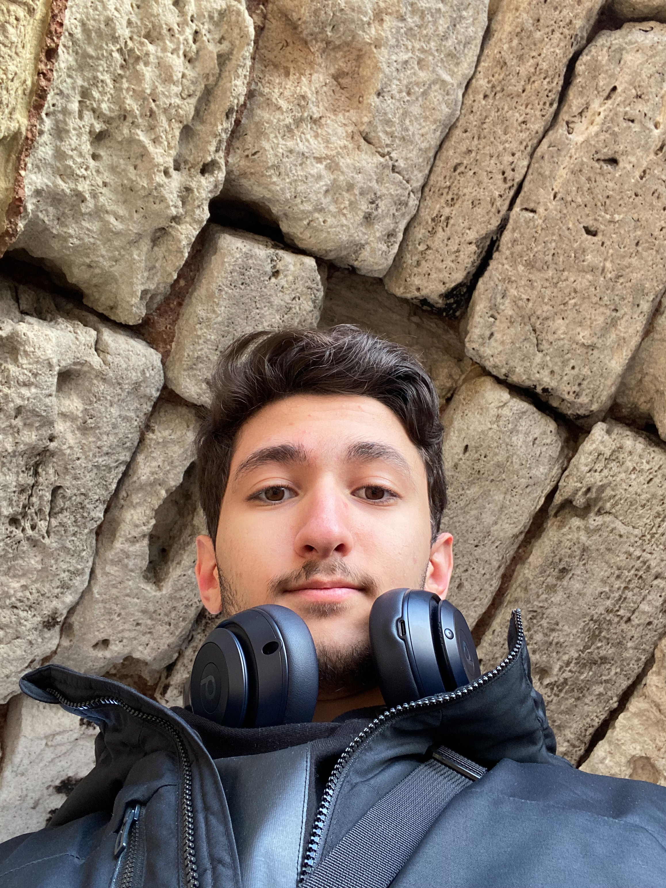

Hello, I'm Arda Türkmenoğlu
Computer Science & Engineering · Istanbul Technical University
🇹🇷
👤
About Me

I was born in 2004 in Kayseri, Türkiye. I have achieved country-wide degrees in both high school and university exams. I was one of the first 1000 students in the 2023 University Entrance Exam in Türkiye.
Today, I'm studying Computer Engineering at Istanbul Technical University. My interest fields are Autonomous Transportation Systems, Microprocessor Systems, and Semiconductors.
⚡
Tech Stack
C
C++
x86 Assembly
Verilog
Swift
Java
HTML
CSS
JavaScript
🎓
Education
2010 – 2018
Primary & Secondary Education
Develi, Kayseri
2018 – 2022
Kayseri Tekden Science High School
Kayseri
2023 – Present
Istanbul Technical University
Computer Engineering · 2nd Year
🌍
Languages
🇹🇷
Turkish
Native
🇺🇸
English
Upper-Intermediate
🇮🇹
Italian
Elementary
🇩🇪
German
Elementary
Societies that want to live comfortably without working, getting tired and producing are doomed to lose first their dignity, then their freedom, and then their independence and future.